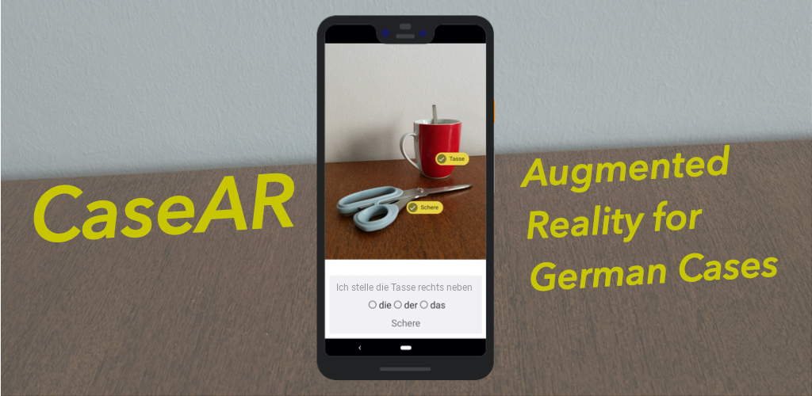
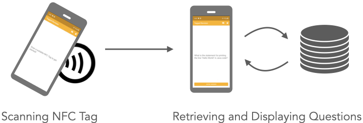

Selected Publications
-
"If the Machine Is As Good As Me, Then What Use Am I?" – How the Use of ChatGPT Changes Young Professionals' Perception of Productivity and AccomplishmentCHI '24: CHI Conference on Human Factors in Computing Systems
-
The AI Ghostwriter Effect: When Users Do Not Perceive Ownership of AI-Generated Text But Self-Declare as AuthorsACM Transactions on Computer-Human Interaction. 31, 2 (Apr. 2024)
-
Relevance, Effort, and Perceived Quality: Language Learners’ Experiences with AI-Generated Contextually Personalized Learning MaterialDIS '23: Designing Interactive Systems Conference
-
Auto-Generating Multimedia Language Learning Material for Children with Off-the-Shelf AIMuC '22: Mensch und Computer 2022
-
Flexibility and Social Disconnectedness: Assessing University Students’ Well-Being Using an Experience Sampling Chatbot and Surveys Over Two Years of COVID-19DIS '22: Designing Interactive Systems Conference
-
Agenda- and Activity-Based Triggers for Microlearning27th International Conference on Intelligent User Interfaces 2022
-
Augmented Reality to Enable Users in Learning Case Grammar from Their Real-World InteractionsCHI '20: CHI Conference on Human Factors in Computing Systems
Further publications can be found on my Google Scholar profile
Practical Research Projects
Learning German Cases with Augmented Reality
 Material for language learning is all around us. Take that lamp on your desk, for example. What was the word for that in German again? What was its grammatical gender? And if you put it next to your coffee cup, how do you say that?
We developed Case AR, a mobile language learning app that detects objects in your surroundings, shows labels, and builds multiple-choice quizzes. It's built on a Tensorflow Lite model for the COCO data set. All processing runs on the mobile device, so there is no internet connection necessary.
Check out the source code on GitHub.
Tagged Revision

The Tagged Revision Android app scans NFC tags and presents a series of questions associated with the discovered tag. The idea is that learners distribute tags around the house and initiate microlearning sessions when they approach these tags. For example, questions on Java programming could be shown when a learner gets a coffee, and questions on interaction design when they put down their mobile device on their desk.
Check out the source code on GitHub. The paper is available here.